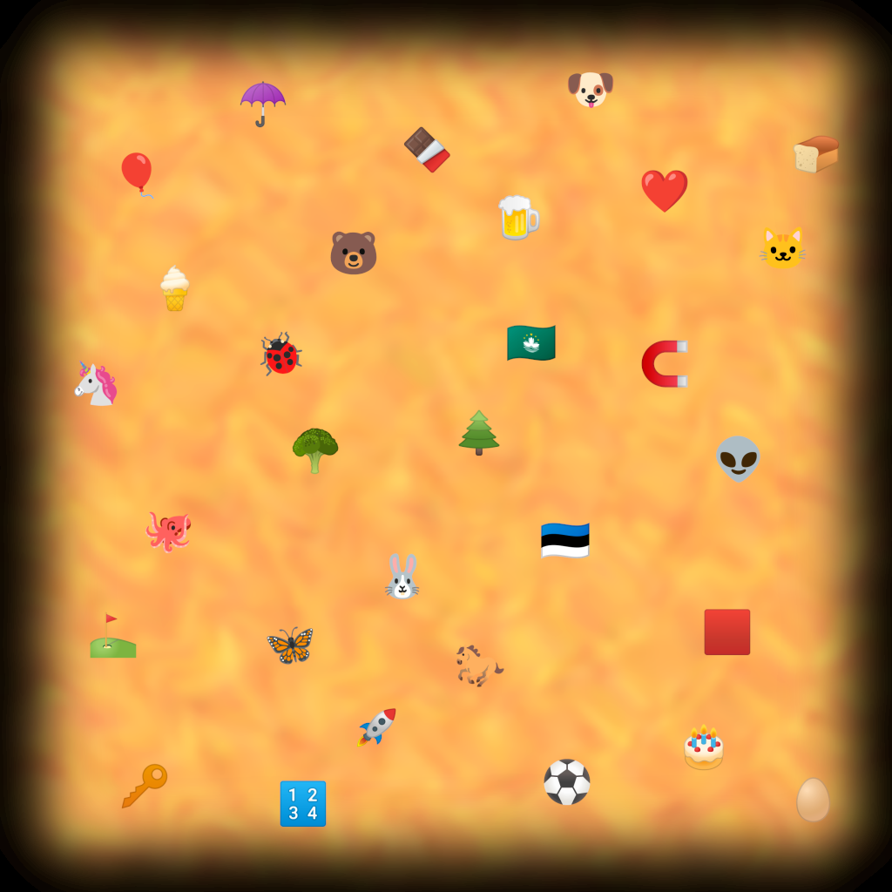

Mysterious Map
It's a map! And some instructions for how to get out! Seems a bit careless of Merlin to just leave this lying around... wait, this is all just nonsense?!
- Start at the center of the triangle formed by the ???, the ???, and the ???.
- Head to the nearest landmark containing the color red.
- Turn right, and continue until reaching a landmark.
- Face towards where you started in step 1, and continue walking until you reach a landmark.
- Turn left, and continue until reaching a landmark.
- You just crossed an edge of the triangle described in step 1; there is a landmark between your current position and one of that edge's endpoints. Go to this landmark.
- Walk away from the other endpoint of the edge described in step 6 until reaching another landmark.
- Turn right, and continue until reaching a landmark.
- Walk to the nearest animal, but don't stop there; instead, skip over it and continue until hitting another landmark in the same direction.
- Continue walking in the same direction still, until reaching a third landmark on this line.
- Walk directly south until you reach a landmark.
